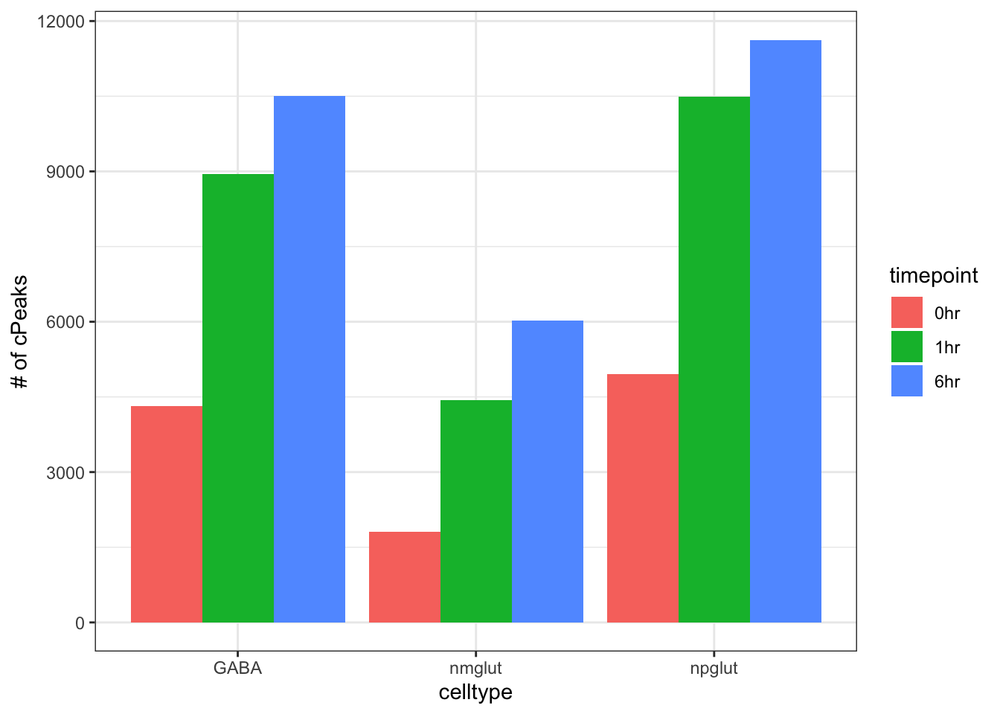

Figures for manuscript
Lifan Liang
2024-09-16
Last updated: 2024-09-23
Checks: 7 0
Knit directory: neuron_stim_eQTL100/
This reproducible R Markdown analysis was created with workflowr (version 1.7.0). The Checks tab describes the reproducibility checks that were applied when the results were created. The Past versions tab lists the development history.
Great! Since the R Markdown file has been committed to the Git repository, you know the exact version of the code that produced these results.
Great job! The global environment was empty. Objects defined in the global environment can affect the analysis in your R Markdown file in unknown ways. For reproduciblity it’s best to always run the code in an empty environment.
The command set.seed(20231109) was run prior to running
the code in the R Markdown file. Setting a seed ensures that any results
that rely on randomness, e.g. subsampling or permutations, are
reproducible.
Great job! Recording the operating system, R version, and package versions is critical for reproducibility.
Nice! There were no cached chunks for this analysis, so you can be confident that you successfully produced the results during this run.
Great job! Using relative paths to the files within your workflowr project makes it easier to run your code on other machines.
Great! You are using Git for version control. Tracking code development and connecting the code version to the results is critical for reproducibility.
The results in this page were generated with repository version 79de6fb. See the Past versions tab to see a history of the changes made to the R Markdown and HTML files.
Note that you need to be careful to ensure that all relevant files for
the analysis have been committed to Git prior to generating the results
(you can use wflow_publish or
wflow_git_commit). workflowr only checks the R Markdown
file, but you know if there are other scripts or data files that it
depends on. Below is the status of the Git repository when the results
were generated:
Ignored files:
Ignored: .DS_Store
Ignored: .RData
Ignored: .Rhistory
Ignored: data/.DS_Store
Ignored: data/single_group_ctwas/.DS_Store
Untracked files:
Untracked: GTEx_vs_SCZ.pdf.2024-08-26_21-04-15.log
Untracked: GTEx_vs_SCZ.png
Untracked: GTEx_vs_SCZ.png.2024-08-26_13-44-01.log
Untracked: GTEx_vs_SCZ.png.2024-08-26_20-30-40.log
Untracked: GTEx_vs_SCZ.png.2024-08-26_20-51-18.log
Untracked: GTEx_vs_SCZ.png.2024-08-26_20-59-28.log
Untracked: GTEx_vs_SCZ.png.2024-08-26_21-03-42.log
Untracked: GTEx_vs_SCZ.tiff
Untracked: GTEx_vs_SCZ.tiff.2024-08-26_21-04-43.log
Untracked: geneMapping.rds
Note that any generated files, e.g. HTML, png, CSS, etc., are not included in this status report because it is ok for generated content to have uncommitted changes.
These are the previous versions of the repository in which changes were
made to the R Markdown (analysis/display.Rmd) and HTML
(docs/display.html) files. If you’ve configured a remote
Git repository (see ?wflow_git_remote), click on the
hyperlinks in the table below to view the files as they were in that
past version.
| File | Version | Author | Date | Message |
|---|---|---|---|---|
| Rmd | 79de6fb | Lifan Liang | 2024-09-23 | wflow_publish(c("analysis", "data", "docs")) |
| html | ef89bed | Lifan Liang | 2024-09-19 | Build site. |
| Rmd | c693b4c | Lifan Liang | 2024-09-19 | wflow_publish(c("analysis", "data", "docs")) |
| html | c693b4c | Lifan Liang | 2024-09-19 | wflow_publish(c("analysis", "data", "docs")) |
eQTL mapping
eQTL summary

Number of eGenes for each condition.
| Version | Author | Date |
|---|---|---|
| c693b4c | Lifan Liang | 2024-09-19 |

Effect size correlation with GTEx cerebellum

Effect size correlation with GTEx whole blood

Concordance of eQTL effect direction between our eQTLs and GTEx cerebellum / whole blood tissue
Dynamic eQTL mapping

Venn diagram of eGenes at resting condition (0 hours) across cell types
Venn diagram of dynamic eGenes across cell types

Examples with GABA dynamic eGenes: CROT eQTL in 6 hour GABA

Examples with NPglut dynamic eGenes: PPM1H eQTL in 6 hour NPglut

Examples with NMglut dynamic eGenes: ADAM10 eQTL in 1 hour NPglut

Upset plot comparing sharing across cell types between static eGenes and dynamic eGenes
TORUS enrichment analysis of dynamic eGenes and static eGenes over differentially accessible peaks

TORUS enrichment analysis of dynamic eGenes and static eGenes over enhancers in 1 hour NMglut
caQTL and ASoC

TORUS analysis of enrichment of ASoC in eQTL

TORUS analysis of enrichment of genomic features in eQTL
Pi1 analysis ascertaining eQTL pvalues of ASoC
cTWAS with eQTLs

PVE and enrichment for the 9 conditions across 5 NPD traits
Genes with PIP>80% in 5 NPD traits. Genes are dynamic if their 1 hour and 6 hour PIP minus 0 hour is larger than 0.5

Locus plot of Schizophrenia cTWAS of neuron stimulation eQTL
PIPs of significant genes in SCZ cTWAS

Genes with PIP>50% in SCZ cTWAS categorized as static or dynamic.
Comparison with GTEx cTWAS
All top genes shared with GTEx are static while most unique top genes are dynamic
Enrichment analysis of high PIP genes
We take the union of top genes (PIP>80%) from three NPD traits (SCZ, bipolar, and depression).
Welcome to enrichR
Checking connection ... Enrichr ... Connection is Live!
FlyEnrichr ... Connection is Live!
WormEnrichr ... Connection is Live!
YeastEnrichr ... Connection is Live!
FishEnrichr ... Connection is Live!
OxEnrichr ... Connection is Live!
Attaching package: 'dplyr'
The following objects are masked from 'package:stats':
filter, lag
The following objects are masked from 'package:base':
intersect, setdiff, setequal, unionUploading data to Enrichr... Done.
Querying GO_Biological_Process_2023... Done.
Parsing results... Done.Highlighting CPT1C

SCZ cTWAS locus plot centering CPT1C
eQTL plot for CPT1C in NMglut
SCZ cTWAS with ASoC and caQTL
| 0hr_GABA | 1hr_GABA | 6hr_GABA | 0hr_npglut | 1hr_npglut | 6hr_npglut | 0hr_nmglut | 1hr_nmglut | 6hr_nmglut | |
|---|---|---|---|---|---|---|---|---|---|
| ASOC | 11297 | 18252 | 21118 | 5573 | 9259 | 10116 | 11370 | 22207 | 21846 |
| processed_ASOC | 15658 | 22170 | 24458 | 7948 | 11587 | 12160 | 16444 | 26334 | 26294 |
| caQTL | 4318 | 8954 | 10504 | 1802 | 4435 | 6017 | 4957 | 10497 | 11622 |
| processed_caQTL | 12575 | 13714 | 13902 | 6942 | 7540 | 7707 | 14323 | 15493 | 15620 |
| Union | 25283 | 31430 | 33470 | 13841 | 17449 | 18018 | 27425 | 36310 | 36366 |


58 peaks with sum of PIP>50%. 16 peaks have sum of PIP>80%.


Likely target genes
sessionInfo()R version 4.1.2 (2021-11-01)
Platform: x86_64-apple-darwin17.0 (64-bit)
Running under: macOS Big Sur 10.16
Matrix products: default
BLAS: /Library/Frameworks/R.framework/Versions/4.1/Resources/lib/libRblas.0.dylib
LAPACK: /Library/Frameworks/R.framework/Versions/4.1/Resources/lib/libRlapack.dylib
locale:
[1] en_US.UTF-8/en_US.UTF-8/en_US.UTF-8/C/en_US.UTF-8/en_US.UTF-8
attached base packages:
[1] stats graphics grDevices utils datasets methods base
other attached packages:
[1] pheatmap_1.0.12 dplyr_1.0.7 enrichR_3.2 workflowr_1.7.0
loaded via a namespace (and not attached):
[1] tidyselect_1.1.1 xfun_0.29 bslib_0.3.1 purrr_0.3.4
[5] colorspace_2.0-2 vctrs_0.3.8 generics_0.1.2 htmltools_0.5.2
[9] yaml_2.2.2 utf8_1.2.2 rlang_1.0.0 jquerylib_0.1.4
[13] later_1.3.0 pillar_1.7.0 DBI_1.1.2 glue_1.6.1
[17] RColorBrewer_1.1-2 lifecycle_1.0.1 stringr_1.4.0 munsell_0.5.0
[21] gtable_0.3.0 htmlwidgets_1.5.4 evaluate_0.14 knitr_1.37
[25] WriteXLS_6.4.0 callr_3.7.0 fastmap_1.1.0 crosstalk_1.2.0
[29] httpuv_1.6.5 ps_1.6.0 curl_4.3.2 fansi_1.0.2
[33] highr_0.9 Rcpp_1.0.11 DT_0.26 promises_1.2.0.1
[37] scales_1.1.1 jsonlite_1.7.3 fs_1.5.2 rjson_0.2.21
[41] ggplot2_3.3.5 digest_0.6.29 stringi_1.7.6 processx_3.5.2
[45] getPass_0.2-2 cowplot_1.1.1 rprojroot_2.0.2 grid_4.1.2
[49] cli_3.1.1 tools_4.1.2 magrittr_2.0.2 sass_0.4.1
[53] tibble_3.1.6 crayon_1.4.2 whisker_0.4 pkgconfig_2.0.3
[57] ellipsis_0.3.2 assertthat_0.2.1 rmarkdown_2.11 httr_1.4.2
[61] rstudioapi_0.13 R6_2.5.1 git2r_0.29.0 compiler_4.1.2